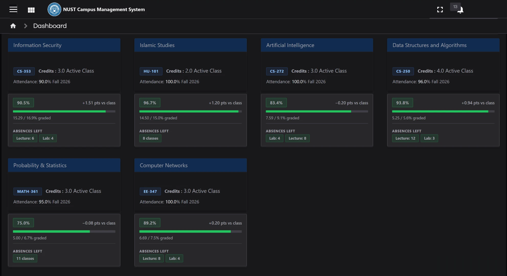
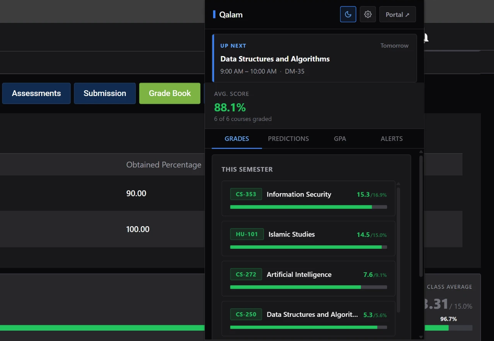
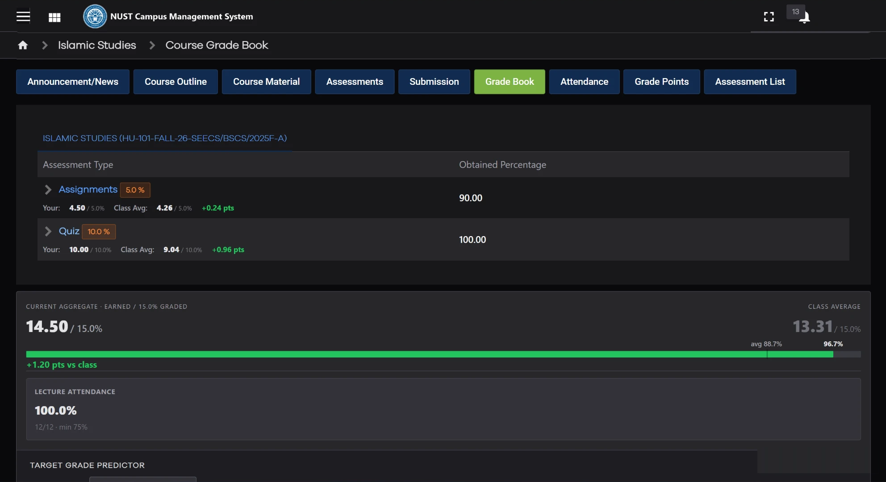
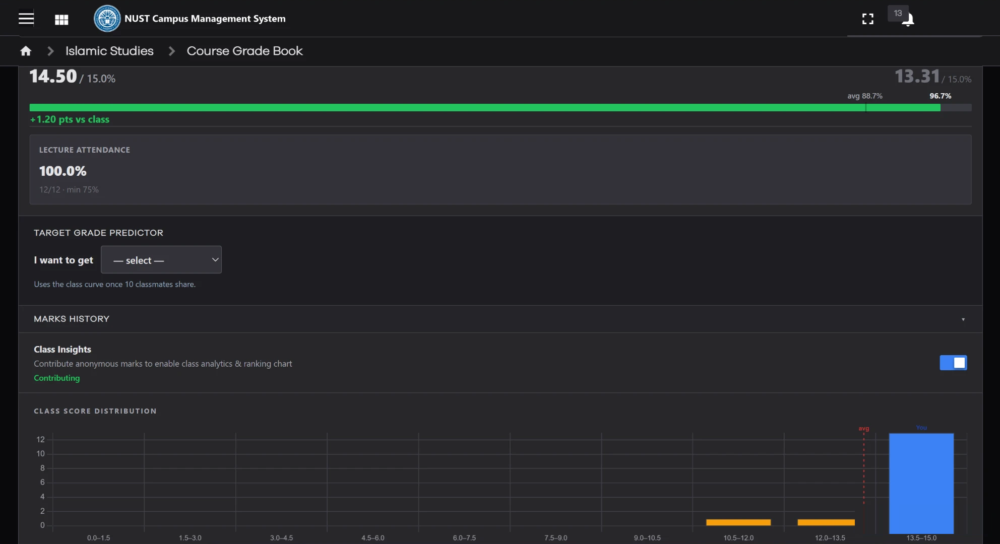
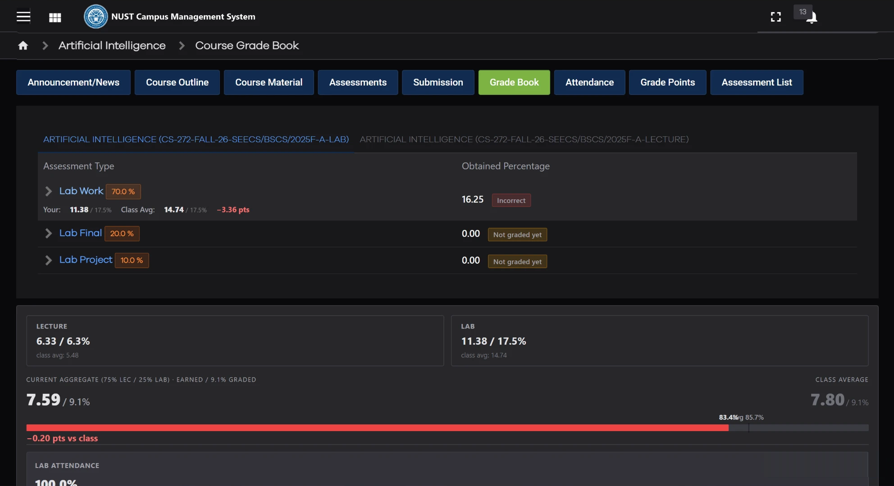
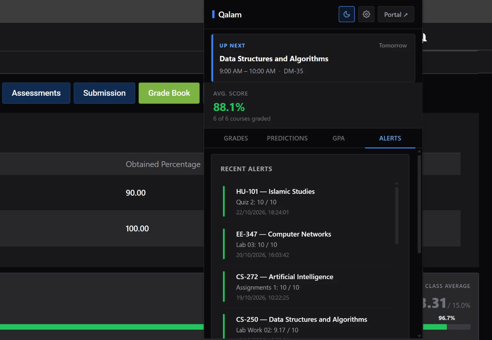

Dark Mode
A tidier portal that keeps Qalam's fonts and tables, plus a full dark theme.
Browser extension for NUST students
A cleaner look, dark mode, grade predictions, attendance tracking and class insights. All inside your browser.


A tidier portal that keeps Qalam's fonts and tables, plus a full dark theme.
Pick a grade and see what you need in the remaining quizzes and exams.
Lectures and labs combined under the 75% rule, with an absence planner.
Opt-in score distribution, average and spread for each course.
Grades, next class, GPA calculator and alerts without opening the portal.
Desktop notifications for new marks and fee vouchers before they're due.




All grade calculations run in the browser. Marks leave only for courses you choose to share, under an anonymous ID. Names, emails and passwords are never sent.
Add Qalam 2.0 to your browser from the Chrome Web Store.
Sign in to the portal as usual and the new look loads on its own.
Turn on alerts and Class Insights from the popup's Settings.